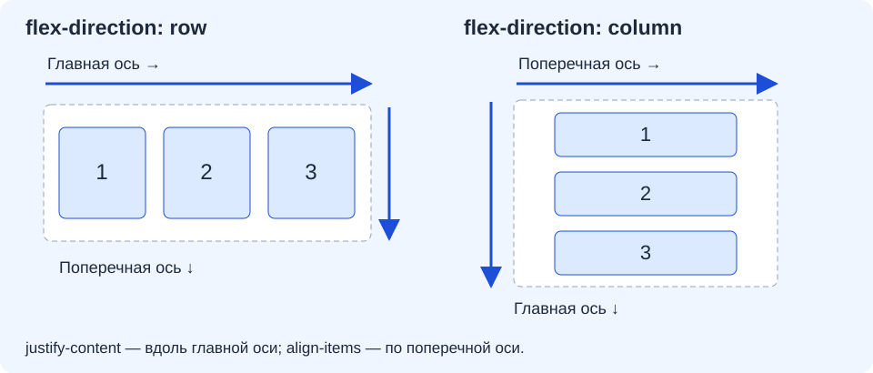

Flexbox, viewport и адаптивный интерфейс мобильной страницы
Что получится
Продолжаем свой веб-проект из трёх страниц. В каталоге три карточки научатся занимать свободное место и переноситься на новую строку, когда рядом тесно. Вы выясните, какой элемент управляет расположением, почему ширина окна влияет на результат и что сообщает браузеру viewport.
Текущий набор индивидуальных заданий — сохраняйте свой номер, названия, характеристики, изображения и форму. В объяснениях используется отдельный преподавательский пример 00 «Техника дома»: холодильник, стиральная машина, электрочайник. Студентам этот номер не назначается.
Обязательный результат: действующий проект с общим CSS, каталог из трёх карточек в гибком контейнере, проверенный viewport на трёх страницах и наблюдения при ширине 320, 768 CSS-пикселей и широком окне. Содержание, порядок позиций, ссылки и ограничения формы сохраняются. Полную доработку всех страниц для мобильного сценария продолжим на паре 18.
Работайте небольшими шагами: прочитайте объяснение → предскажите изменение → проверьте опыт в браузере → примените приём → выполните самопроверку. Промежуточного разрешения преподавателя не требуется. После обязательного минимума можно перейти к продолжению или подготовиться к одному итоговому показу.
Подготовьте исходное состояние
Откройте свою папку проекта, catalog.html и общий style.css. Должны работать переходы между index.html, catalog.html и form.html. После пар 15–16 у main есть класс page, у каталожных article — card, оформление формы связано с классами request-form и form-field. Точка используется в CSS-селекторе, а в HTML имена классов записаны без точки. Не создавайте проект заново и не заменяйте свои страницы демонстрационными.
Проверьте знакомые правила, а не вставляйте их повторно:
* {
box-sizing: border-box;
}
main.page {
width: 92%;
max-width: 56rem;
margin: 0 auto;
padding: 1rem;
}
width оставляет место по сторонам, max-width ограничивает растяжение на большом экране, padding отделяет содержание от края. border-box включает внутренние отступы и рамки в заданный размер. Это полезная основа, но она ещё не объясняет, как нескольким карточкам делить одну строку.
Действие: откройте каталог, затем форму. В каталоге должны быть три полные позиции; в форме — прежние подписи и поля. Если минимум пары 16 не завершён, сначала восстановите его. Дополнительные задания предыдущих пар не являются условием начала этой работы.
Самопроверка: вы знаете, какой CSS-файл меняете, и можете назвать три карточки своего варианта. Сохраните исходное состояние обычным сохранением файлов; новые системы хранения версий сейчас не требуются.
Контейнер управляет своими непосредственными детьми
До этого обычные блочные article шли сверху вниз. Flexbox — способ расположить элементы вдоль выбранной оси и распределить между ними доступное место. Его включают у родителя, а не по отдельности у каждой карточки.
main.page
├── h1 заголовок страницы
├── p пояснение
└── div.catalog-list flex-контейнер
├── article.card flex-элемент 1
│ ├── h2 обычное содержимое карточки
│ ├── img
│ └── p ...
├── article.card flex-элемент 2
└── article.card flex-элемент 3
Flex-элементами станут только непосредственные дети .catalog-list. Заголовок товара, картинка и абзацы находятся на следующий уровень глубже: внешнее правило не выстраивает их в одну строку. Свойства Flexbox уже встречались в меню, но теперь мы изучаем их действие и применяем к другому содержимому.
Прогноз: что окажется рядом, если написать display: flex для main: только карточки или ещё заголовок и вводный абзац? Сначала объясните ответ по дереву.
Действие — catalog.html: после заголовка и пояснения, непосредственно перед первым <article class="card">, добавьте <div class="catalog-list">. После третьего </article> поставьте </div>. Существующие три карточки целиком остаются внутри. Другие ссылки после каталога оставьте снаружи контейнера.
<div class="catalog-list">
<!-- Здесь три уже существующих article class="card"
с полным содержимым вашего варианта. -->
</div>
Это схема оболочки, а не замена трёх карточек комментарием. div не создаёт дополнительный смысловой раздел; он объединяет элементы для компоновки. Смысл отдельных товаров по-прежнему задаёт article.
Проверка: после одной этой HTML-правки вид страницы почти не изменился; все три позиции сохранились. Если исчез товар, восстановите его содержимое. Если в рамку первой карточки попали остальные, проверьте её закрывающий тег.
Включите Flexbox и увидьте его границы
Файл: style.css, после существующего оформления карточек. Пока добавьте только:
.catalog-list {
display: flex;
gap: 1rem;
}
display: flex меняет расположение детей контейнера. gap задаёт промежуток между ними; он не добавляет внешний отступ от края контейнера. Не путайте его с padding родителя или margin карточки.
Прогноз: при сужении окна карточки сами перейдут на следующую строку или постараются удержаться рядом?
Опыт: сохраните CSS, обновите каталог. Медленно уменьшайте ширину окна. По умолчанию действует flex-wrap: nowrap: одна flex-строка, даже если в ней уже неудобно. Элементы могут сжиматься в пределах своих ограничений; длинное содержимое может вылезать. Само display: flex ещё не означает адаптивность.
Проверка: карточки располагаются в строку, между ними виден промежуток. Заголовок страницы остаётся над каталогом; текст внутри карточек не выстроился в одну горизонтальную полосу. Если всё пошло рядом с заголовком, правило применено к неправильному родителю.
Главная и поперечная оси
Flexbox распределяет элементы вдоль главной оси, а выравнивает относительно поперечной. Направление главной оси задаёт flex-direction.

Для обычного горизонтального русского текста:
| Свойство контейнера | Главная ось | Поперечная ось |
|---|---|---|
flex-direction: row |
Вдоль строки, слева направо | Сверху вниз |
flex-direction: column |
Сверху вниз | Вдоль строки |
row — исходное значение. column меняет ось, а не HTML-порядок. Утверждение «justify всегда по горизонтали» неверно: горизонтальность зависит от направления.
Опыт — в существующем правиле .catalog-list: временно добавьте flex-direction: column. Перед обновлением предскажите направление. Посмотрите результат, затем замените значение на row. Не создавайте второе правило ради каждого опыта.
Действие: оставьте flex-direction: row или уберите эту строку, чтобы использовалось исходное значение. Запишите своими словами: «Сейчас главная ось …, поперечная …».
Проверка: вы можете показать родителя в HTML и объяснить, почему сменилось расположение трёх карточек, а их тексты остались внутри.
Распределение и выравнивание решают разные задачи
justify-content распределяет свободное место вдоль главной оси. align-items выравнивает элементы по поперечной оси в каждой flex-строке.
| Свойство | Значение | Что наблюдать |
|---|---|---|
justify-content |
flex-start |
Элементы у начала главной оси |
justify-content |
center |
Группа элементов по центру, если осталось свободное место |
justify-content |
space-between |
Свободное место распределено между элементами |
align-items |
stretch |
Элементы с автоматическим поперечным размером растягиваются в пределах своей строки |
align-items |
flex-start |
Элементы у начала поперечной оси; собственные размеры сохраняются |
align-items |
center |
Элементы центрируются по поперечной оси |
gap — заданный промежуток, а space-between распределяет оставшийся избыток пространства. Это разные механизмы. Центрирование также не уменьшает карточки, которые не помещаются.
Короткая лаборатория: в правиле .catalog-list временно поставьте justify-content: center и align-items: flex-start. Для трёх карточек временно добавьте отдельное правило:
.catalog-list > .card {
flex: 0 0 12rem;
}
Символ > означает «непосредственный ребёнок». Числа flex разберём ниже; сейчас опыт удерживает карточки около выбранного размера. Делайте его в достаточно широком окне, чтобы осталось свободное место.
Прогноз и опыт: замените center на space-between. Изменится ли ширина промежутков при расширении окна? Затем сравните align-items: flex-start и stretch. Если высота содержимого всех карточек случайно одинакова, временно добавьте к одному описанию короткое предложение и после опыта удалите его. Смотрите на рамки карточек, а не только на картинки.
Проверка: при stretch карточки одной строки могут получить одинаковую высоту; текст внутри не обязан находиться на одинаковой высоте. Для одной короткой последней строки space-between не создаёт отсутствующие карточки. Если эффекта центрирования нет, сначала выясните, осталось ли свободное место.
Завершите опыт: удалите временное justify-content и правило с 12rem. Оставьте align-items: stretch; ниже оно войдёт в рабочее решение. Временный изменённый текст восстановите.
Перенос строк и гибкая ширина
Теперь нужно решить две задачи: разрешить перенос и объяснить, сколько места просит карточка. За первую отвечает контейнер, за вторую — его дети.
Файл: style.css. Замените учебное правило контейнера и временное правило карточек следующими двумя правилами:
.catalog-list {
display: flex;
flex-direction: row;
gap: 1rem;
flex-wrap: wrap;
align-items: stretch;
}
.catalog-list > .card {
flex: 1 1 15rem;
min-width: 0;
max-width: 100%;
margin-bottom: 0;
}
Старое общее оформление .card — фон, рамка, внутренние отступы — сохраните. В паре 16 нижний margin отделял вертикальные карточки. Теперь промежутками управляет gap, поэтому нижний отступ именно каталожных карточек обнулён. Селектор .catalog-list > .card точнее общего .card и не меняет карточки в других местах.
flex-wrap: wrap разрешает несколько строк. Сокращение flex: 1 1 15rem содержит три значения:
| Часть | Имя | Смысл для карточки |
|---|---|---|
1 |
flex-grow |
Участвовать в распределении свободного места строки |
1 |
flex-shrink |
При нехватке места разрешить сжатие с учётом базового размера и ограничений |
15rem |
flex-basis |
Базовый размер по главной оси до распределения места |
15rem — начальная заявка на размер, а не строгий минимум и не приказ всегда иметь ровно такую ширину. rem связан с размером шрифта корневого элемента. При обычном исходном размере 16 CSS-пикселей это примерно 240 CSS-пикселей, но пользовательские настройки могут быть другими.
При переносе браузер сначала определяет, какие элементы помещаются в строку с учётом их размеров и промежутков, затем распределяет место в каждой строке. Если одна карточка осталась в последней строке, её grow: 1 позволяет ей занять свободную ширину. Это ожидаемый результат выбранного правила. У всех карточек одинаковая заявка и коэффициент роста, поэтому они делят свободное место своей строки поровну при отсутствии других ограничений.
min-width: 0 разрешает flex-элементу стать уже автоматического минимума, который может зависеть от содержимого. Это не команда переносить любую длинную строку: неразрывный адрес всё ещё может выйти за край. max-width: 100% ограничивает внешнюю ширину карточки шириной контейнера при принятом border-box. Отдельно проверяют внутренние картинки и текст.
Прогноз: будет ли число колонок неизменно? Может ли последняя карточка быть шире двух предыдущих?
Действие: сохраните файлы и плавно изменяйте ширину каталога. Наблюдайте переход от нескольких карточек рядом к одной в строке. Не подгоняйте размер окна до обязательных «трёх колонок»: число зависит от доступного внутреннего места .page, промежутков и размеров текста.
Проверка: ни одна карточка не исчезла; порядок трёх позиций совпадает с HTML; узкая карточка не выталкивает соседей за страницу. Если картинка шире карточки, проверьте знакомое правило изображений max-width: 100%; height: auto;. Не назначайте всем картинкам новую жёсткую ширину.
Viewport: какую ширину использует страница
Viewport — область, относительно которой браузер раскладывает страницу. В этой работе нас интересует ширина области CSS-вёрстки. Она измеряется в CSS-пикселях. Физические точки дисплея и CSS-пиксели не обязаны совпадать: экран с большим количеством физических точек может показывать страницу шириной несколько сотен CSS-пикселей.
На настольном компьютере ширину обычно меняет размер окна или область страницы внутри DevTools. На телефоне без подходящей настройки браузер может использовать широкую виртуальную область вёрстки, а затем уменьшить всю страницу для показа. Получится мелкий текст и видимость «большого сайта в миниатюре», хотя гибкая раскладка рассчитана на другую ширину.
Файл и место: head в каждом из трёх существующих HTML-файлов. Найдите уже знакомую строку:
<meta name="viewport" content="width=device-width, initial-scale=1">
| Часть | Назначение |
|---|---|
name="viewport" |
Настройка области просмотра для мобильного браузера |
width=device-width |
Согласовать ширину вёрстки с шириной устройства в CSS-пикселях |
initial-scale=1 |
Задать исходный масштаб при открытии |
Эта строка уже переносилась из главной на другие страницы. Проверьте существующую, не добавляйте вторую. Если её действительно нет, добавьте одну внутри head. Не используйте user-scalable=no и maximum-scale=1: человеку нужно сохранять возможность увеличивать страницу.
Метатег не переносит карточки и не исправляет фиксированную ширину содержимого. Он даёт мобильному браузеру правильные исходные условия, а CSS должен уметь работать при этой ширине.
Прогноз: достаточно ли одного viewport, чтобы изображение с жёсткой шириной 1000 пикселей поместилось в карточку? Объясните, где потребуется правило CSS.
Самопроверка: в index.html, catalog.html и form.html найден ровно один метатег viewport, с одинаковыми двумя настройками. Масштабирование не запрещено.
Проверьте ширину в браузере
В DevTools откройте режим устройств: обычно инструменты вызываются F12 или через меню браузера, затем выбирается значок телефона и планшета. Выберите изменяемый размер, который может называться Responsive, и задавайте ширину области страницы. Названия и сочетания клавиш зависят от браузера.
Проверяем именно ширину CSS-области, а не размер картинки телефона в интерфейсе инструментов. Масштаб предпросмотра в DevTools может уменьшать показ, чтобы он поместился на мониторе. Это не то же самое, что заданная ширина 320 CSS-пикселей. Перед сравнением используйте обычный масштаб страницы браузера.
Сначала прогноз: в какой из трёх ширин вероятнее одна карточка в строке? Почему ширина содержимого меньше ширины viewport?
Действие: откройте catalog.html и заполните короткую таблицу наблюдений в обычном текстовом файле рядом с проектом. Формат свободный; скриншоты и большой отчёт не требуются.
| Ширина | Что записать |
|---|---|
| 320 CSS-пикселей | Число карточек в строке; есть ли горизонтальная прокрутка страницы; помещаются ли картинки и текст |
| 768 CSS-пикселей | Число карточек; что произошло с последней строкой; виден ли gap |
| Широкая область, например 1200 CSS-пикселей | Число карточек; ограничивает ли .page излишнее растяжение; как распределено свободное место |
Если средство разработчика не позволяет задать широкую область, используйте доступную большую ширину и запишите её. Высоту можно оставить удобной: вертикальная прокрутка каталога нормальна. Для этого опыта не нужно выбирать определённую модель телефона.
Если DevTools пока сложны: сузьте и расширьте реальное окно браузера, закройте боковые панели, наблюдайте перенос. Запишите «узкое окно / среднее / широкое», не называя их точными 320 и 768. Это позволяет проверить механизм; точные ширины остаются отдельной незавершённой проверкой, которую можно выполнить на доступном рабочем месте. Не выдавайте размер внешней рамки окна за CSS-ширину страницы.
Проверка: объясните один наблюдаемый переход словами: «При уменьшении внутренней ширины контейнера две базовые карточки с промежутком перестали помещаться в строке, поэтому …». Отсутствие горизонтальной прокрутки проверяйте у всей страницы, а не только внутри одной карточки.
Просмотрите также главную и форму на узкой ширине. Это короткая проверка сохранности: переходы работают, фокус виден, поля не исчезли. Если нашли проблему, запишите её для полной практики пары 18. Сейчас не нужно превращать форму в сложную сетку.
Если наблюдение не совпало с прогнозом
Исправляйте по одной причине: файл → правило → сохранение → обновление → повтор опыта.
| Признак | Где искать причину |
|---|---|
Вместе с карточками в строку попал h1 |
display: flex стоит у main, а нужен у .catalog-list; границы нового div |
| Весь текст каждой карточки идёт рядом | Flexbox ошибочно включён у самой .card, а не у родителя |
| Карточки остаются в одной тесной строке | flex-wrap: wrap у контейнера, отсутствие более позднего nowrap |
| Карточки всё время вертикальны | Оставлен flex-direction: column; CSS не подключён; класс в HTML написан иначе |
| Между строками слишком большой отступ | Сохранён margin-bottom у каталожных карточек вместе с gap; точность селектора и порядок CSS |
| Карточка сжимается, но текст или картинка вылезает | min-width: 0 у flex-элемента; max-width картинки; длинная неразрывная строка внутри |
justify-content словно не действует |
Нет свободного места; карточки с grow: 1 уже его заняли; выбран не тот контейнер |
| Последняя одиночная карточка растянулась | Для flex: 1 1 15rem это ожидаемо; объясните роль первого числа |
| На телефоне всё очень мелкое | Проверить единственный meta viewport; затем реальные фиксированные размеры CSS |
| Изменения влияют на форму или меню | Слишком общий селектор; рабочие правила должны относиться к .catalog-list и его .card |
Не скрывайте проблему через overflow-x: hidden: исчезнувший край не означает, что содержание стало доступно. Не переставляйте карточки свойством order ради красивой строки: сохраняем смысловой порядок HTML и клавиатурного обхода.
Завершение обязательного минимума
Самостоятельно убедитесь: три полные карточки находятся в одном контейнере, переносятся и используют flex: 1 1 15rem; промежутки задаёт gap; данные и оформление своего варианта сохранены. На трёх страницах проверен единственный viewport. Записаны наблюдения по доступным ширинам и честно отмечены непроведённые проверки.
Сохраните всю папку проекта. Вы должны уметь объяснить родителя и детей, две оси, три части flex и назначение viewport. Не нужно заучивать таблицу свойств без связи со своей страницей.
Продолжение начинайте самостоятельно. Преподавателю показывают результат один раз после завершения выбранного маршрута.
Продолжение после обязательного минимума
1. Исследуйте рост и базовый размер
Файл и место: существующее правило .catalog-list > .card в style.css. Сначала предскажите, затем по очереди сравните исходное flex: 1 1 15rem с flex: 0 1 15rem и flex: 1 1 20rem. Сохранение и обновление нужны после каждого изменения. Выберите ширину, при которой хорошо видна разница, и запишите её.
Подсказка: сначала изменяется участие в росте, затем размер заявки; не меняйте gap одновременно. Для каждого опыта найдите хотя бы один наблюдаемый эффект или объясните, почему выбранная ширина его не показывает.
Готовность: две короткие записи «изменение → прогноз → наблюдение → объяснение». В рабочий проект верните flex: 1 1 15rem. Объясните, почему grow: 0 не запрещает перенос, а basis: 20rem не является фиксированной шириной.
2. Найдите границу переноса
Место: каталог в браузере, тот же рабочий CSS. Плавно меняйте ширину и найдите момент перехода от двух карточек в строке к одной. Не требуется вычислять точный порог до пикселя. Запишите две соседние доступные ширины с разным результатом и укажите, что ещё занимает место кроме базовых размеров карточек.
Подсказка: учтите промежуток, внутренние отступы .page, её процентную ширину и размер rem. Ширина viewport и внутренняя ширина каталога различаются.
Готовность: наблюдение воспроизводится при повторном расширении и сужении; объяснение ссылается на доступное место, а не на название устройства. Данные и порядок позиций не изменены.
3. Проверьте длинное содержимое и исправьте одну причину
Файл и место: описание одной карточки в catalog.html. Сохраните исходный текст в своих заметках, временно добавьте длинную неразрывную учебную строку, например:
ОченьДлинноеУчебноеНазваниеБезПробеловДляПроверкиПереноса
Исследуйте узкую ширину. Сравните наличие и отсутствие min-width: 0 у flex-элемента, затем восстановите это правило.
Подсказка: разрешить сжатие рамки и разрешить разрыв текста — разные задачи. Для длинного текста исследуйте overflow-wrap: anywhere, ограничив применение нужными абзацами каталога. Не назначайте это правило всем элементам страницы и не скрывайте переполнение.
Готовность: после исправления длинная строка читается внутри карточки на узкой ширине; вы можете объяснить, какую задачу решает каждое из двух правил. Верните исходное описание своего варианта и убедитесь, что полезное правило не повредило обычный текст. Содержимое карточки не заменяется искусственной строкой в сдаваемой работе.
Один итоговый показ преподавателю
Подготовьте открытый каталог, catalog.html, style.css и короткие наблюдения. Если точные ширины проверить не удалось, укажите это явно и покажите поведение при изменении окна.
- Назовите свой вариант, покажите три позиции. Сузьте и расширьте область страницы, покажите перенос и объясните одно наблюдение. Укажите
.catalog-listв HTML и правило его детей в CSS. - Покажите единственный
viewportна одной выбранной преподавателем странице. Коротко перейдите через меню к форме: подписи и поля сохранены, фокус ссылки виден приTab. Прежняя GET-форма по-прежнему учебная и не сохраняет заявку. - По выбору преподавателя измените одно значение:
gap, направление либо коэффициент роста. До обновления предскажите эффект, покажите результат, затем верните рабочий вариант. Объясняйте выбранное свойство, полный опрос по всем строкам CSS не требуется. - Если претендуете на «отлично», покажите наблюдения и исправление из продолжения. Дополнения не заменяют отсутствующий обязательный результат.
Пара 18 продолжит адаптацию трёх страниц и проверку полного мобильного сценария. Сохраните найденные проблемы; правила @media в обязательный результат этой пары не входят.